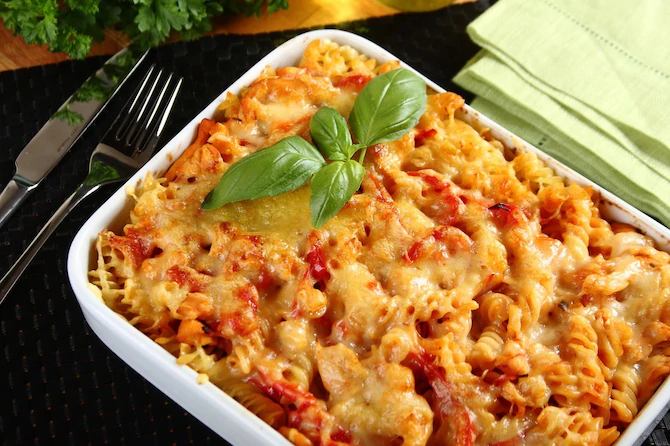

Zapiekanka makaronowa

Składniki:
makaron świderki 100 gramów
Rosół z kury Knorr 1 sztuka
filet z kurczaka 1 sztuka
cebula 1 sztuka
papryka 1 sztuka
pomidor 1 sztuka
przecier pomidorowy 2 łyżki
ząbek czosnku 1 sztuka
mozarella light 20 dekagramów
olej 4 łyżki
woda 1 szklanka
makaron świderki 100 gramów
Rosół z kury Knorr 1 sztuka
filet z kurczaka 1 sztuka
cebula 1 sztuka
papryka 1 sztuka
pomidor 1 sztuka
przecier pomidorowy 2 łyżki
ząbek czosnku 1 sztuka
mozarella light 20 dekagramów
olej 4 łyżki
woda 1 szklanka
Przygotowanie:
Cebulę pokrój w piórka, czosnek przeciśnij przez praskę. Podsmaż je na oleju. Ugotuj makaron na sposób al dente. Warzywa pokrój w paski i wraz z kurczakiem dodaj do całości. Duś około 15 minut. Następnie podlej szklanką wody i dodaj kostkę Rosołu z kury Knorr oraz przecier pomidorowy. Makaron wyłóż do naczynia żaroodpornego, zalej sosem i posyp startym serem. Włóż do piekarnika nagrzanego do 180 stopni na 20 minut. Następnie podawaj.
Cebulę pokrój w piórka, czosnek przeciśnij przez praskę. Podsmaż je na oleju. Ugotuj makaron na sposób al dente. Warzywa pokrój w paski i wraz z kurczakiem dodaj do całości. Duś około 15 minut. Następnie podlej szklanką wody i dodaj kostkę Rosołu z kury Knorr oraz przecier pomidorowy. Makaron wyłóż do naczynia żaroodpornego, zalej sosem i posyp startym serem. Włóż do piekarnika nagrzanego do 180 stopni na 20 minut. Następnie podawaj.